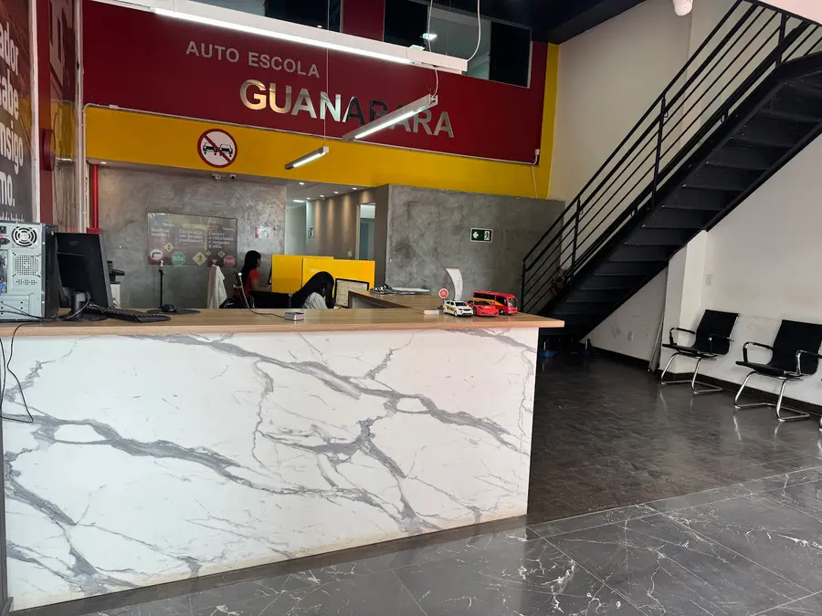
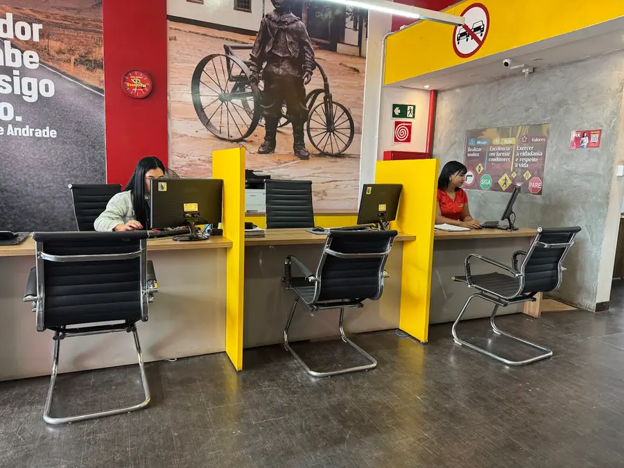
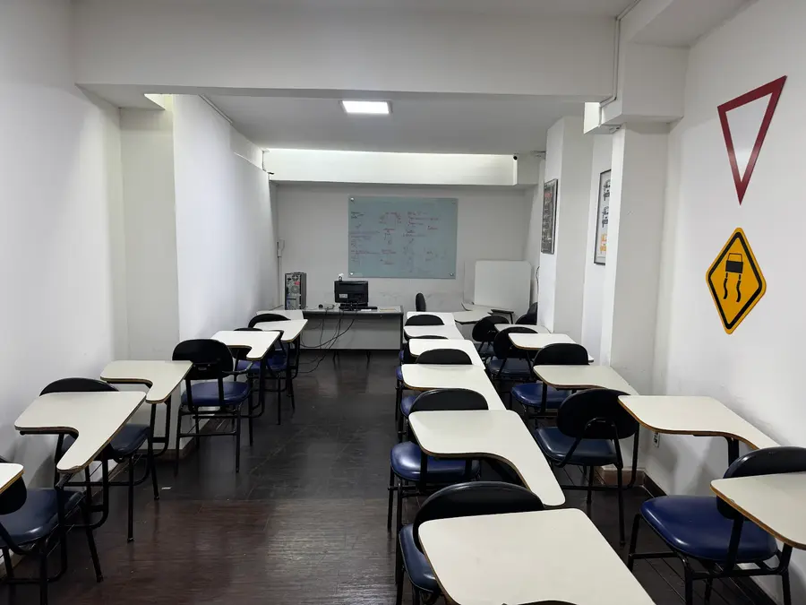

Auto Escola Guanabara
Há 56 anos formando condutores. Tire sua habilitação com quem entende do assunto!
4,8 no Google
Seg a sex 7h às 20h
- Avalie a Guanabara No Google · leva só 1 minuto
- Fazer minha pré-inscriçãoMatrículas abertas · Programa CNH do Brasil
- Instagram@cfcguanabara · 14,2 mil seguidores
- TikTok@autoescola.guanabara · bastidores e aprovados
- FacebookCFC Guanabara · 11 mil seguidores
- Como chegarEsplanada da Estação · abre no Google Maps
- Ligar agora(31) 3831-7730
Avaliações no Google
4,8
154 alunos já avaliaram
Já tirou sua habilitação aqui?
Toque nas estrelas e conte como foi. Abre direto no Google.
Por dentro da Guanabara



Horário de funcionamento
- Segunda7h às 20h
- Terça7h às 20h
- Quarta7h às 20h
- Quinta7h às 20h
- Sexta7h às 20h
- Sábado8h às 12h
- DomingoFechado